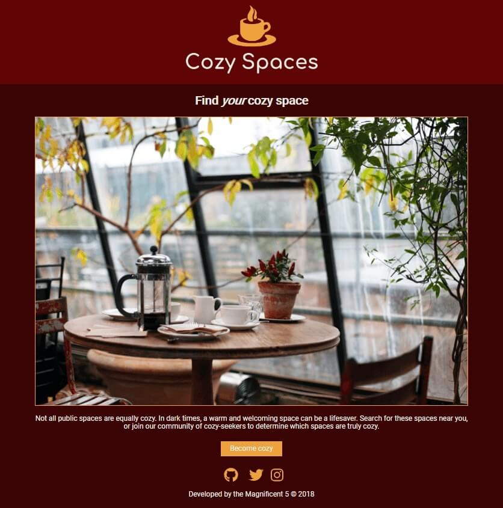
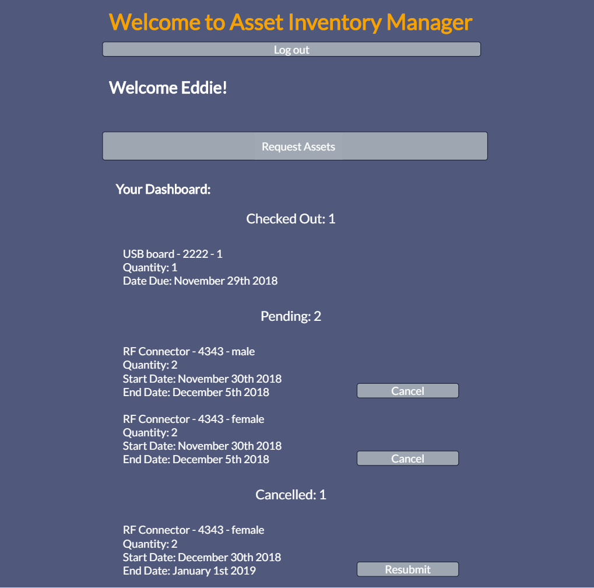
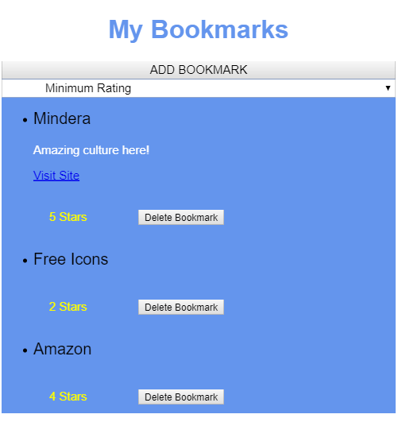

<!DOCTYPE html>
<html lang="en"></html>
<html>
<head>
  <meta charset="utf-8" />
  <meta http-equiv="X-UA-Compatible" content="IE=edge">
  <title>Jemadean Dobrosielski</title>
  <meta name="viewport" content="width=device-width, initial-scale=1">
  <link href="https://fonts.googleapis.com/css?family=Assistant:300|Lato" rel="stylesheet">
  <link rel="stylesheet" type="text/css" media="screen" href="main.css" />
  <script src="main.js"></script>
</head>
<body>
  <header role="banner">
    <h1>Jemadean Dobrosielski</h1>
    <p>Fullstack developer who loves finding and implementing clean, simple, and efficient solutions to make life easier for anyone who wants more time for the things that matter most to them.</p> 
    <p>If that is you, I look forward to having a great conversation with you and getting started…I'm at <a href="mailto:jemadean@gmail.com">jemadean@gmail.com</a>.
    </p>
  </header>

  <nav role="navigation">
    <a href="mailto:jemadean@gmail.com"></a>
    <a href="https://www.linkedin.com/in/jemadean-dobrosielski-108aa154/"></a>
    <a href="https://github.com/JemDobro"></a>
    
  </nav>

  <main role="main">
    <aside role="complementary">
      <h2>Hi! I'm Jemadean</h2>
      <div class="img-container">
        
      </div>
      <p>I am a <strong>fullstack developer</strong> with endless curiosity and the persistent question of <span class="primary-question"><strong><em>"How can I make this even better?"</em></strong></span></p>
      <br>
      <p>As I pick up and implement already great solutions to existing problems, I love trying on new approaches and ideas in order to create a solution for someone where one did not previously exist. This is as true for me in coding as it is in communication and collaboration.</p>
      <br>

      <p>I strive to create seamless user experiences that enable others to spend their time on who and what matters most to them, and I'm very excited that tech makes that possible for billions of people all at the same time.</p>
      <br>

      <p>When I'm not coding, I enjoy running, salsa dancing, and feeding my endless curiosity through what others are saying in their writing, film/TV, music, and social interactions.</p>
    </aside>
    
    <section>
        <article role="article" class="project-card">
            <div class="img-container-project">
                
            </div>
            <div class="card-text">
              <h2>Cozy Spaces</h2>
              <p>Cozy Spaces is focused on bringing a warm glow to life through curating truly cozy spaces, especially for anyone experiencing cold climates, and/or nostalgia of a cozier time. This was a team project built using HTML5, CSS3, JavaScript, React, Redux, GoogleMap API, Node/Express, Mongo and JWTs. </p>
            </div>
            <div class="project-links">
              <a class="view-link" href="https://github.com/thinkful-ei23/cozy-spaces-client" target="_blank">View code</a>
              <a class="view-link" href="https://cozy-spaces-client.herokuapp.com/" target="_blank">View project</a>
            </div>
          </article>
      <article role="article" class="project-card">
          <div class="img-container-project">
              
          </div>
          <div class="card-text">
            <h2>Asset Manager</h2>
            <p>I built this app to address a problem involving a very time consuming manual and unorganized system for inventory management. This app is just one piece of what I envision would be an amazing timesaver and stress reducer for the human managing the assets, and it can also free up valuable human resources for any company that is not using an automated process for their inventory management.  This is my initial full stack app, and it was built with HTML5, CSS3, JavaScript, React, Redux, Node/Express, Mongo and JWTs.</p>
          </div>
          <div class="project-links">
            <a class="view-link" href="https://github.com/JemDobro/asset-manager-client">View code</a>
            <a class="view-link" href="https://asset-manager-jem.herokuapp.com/">View project</a>
          </div>
        </article>
        <article role="article" class="project-card">
            <div class="img-container-project">
                
            </div>
            <div class="card-text">
              <h2>Bookmark</h2>
              <p>This is my first frontend site built to save favorite internet bookmarks.  Users can save favorite bookmarked sites, write a description, and rate the site.  They can also search by rating, see either a detailed or summary view, and delete their bookmarks.  Bookmark was built with HTML5, CSS3, JavaScript, AJAX, and jQuery.</p>
            </div>
            <div class="project-links">
              <a class="view-link" href="https://github.com/thinkful-ei23/Jemadean-bookmarks-app">View code</a>
              <!-- <a class="view-link" href="https://cozy-spaces-client.herokuapp.com/">View project</a> -->
            </div>
          </article>
    </section>
  </main>

  <footer role="contentinfo">
    &copy; 2018 - Jemadean Dobrosielski
  </footer>
</body>
</html>